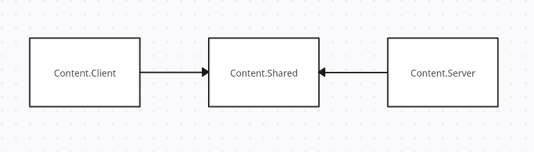

Базовый неткод в Robust Toolbox
Как мы знаем, SS14 - мультиплеерная игра. Соответственно, информация должна синхронизироваться между сервером и клиентами.
Сетевая структура Robust Toolbox
Весь код игры делиться на три структуры: Server, Client и Shared.

Соответственно:
- Код, находящийся в
Content.Server, обрабатывается только сервером; - Код, находящийся в
Content.Client, обрабатывается только клиентом; - Код, находящийся в
Content.Shared, обрабатывается обоими сторонами (prediction, о нём позже).
Помещая тот или иной класс в какой-то из этих папок он становится частью той стороны.
Так становится понятно, что, например, расчёты урона не должны быть на клиенте, как и код, связанный с интерфейсом, не должен находится на сервере.
На клиенте можно распологать: код UI, код визуала (шейдеры, спрайты, эффекты) и т.д.
На сервере можно распологать: расчеты урона, механики, взаимодействия, работу с БД и т.д.
Но существует и Content.Shared.
Prediction
Prediction (дословно - предсказание, предугадывание) - это методика разработки неткода в мультиплеерных играх. Она заключается в том, что при отправке запроса клиентом он, не дожидаясь сервера, производит вычисления локально и создаёт иллюзию игры без задержки.
Однако, когда вычисления после отправки клиентом запроса на сервер дойдут обратно на клиент, происходит сравнение: насколько правильно клиент "предсказал" результат обработки инпутов. Если разница нулевая или практически незначимая, то всё остаётся как есть. Но если разница становится существенной, то игрока насильно возвращает к тому состоянию, которое просчитал сервер.
Если был выполнен инпут на передвижение, то при неправильных расчетах клиентом игрока откинет к тому месту, где он должен быть по расчету сервера.
Код, помещаемый в Content.Shared, становится предугадываемым, т. е. работает механизм prediction'а. Доступ к данному коду может быть получен как с клиента, так и с сервера, однако классы из Content.Shared не могут получить доступ к классам с клиента или с сервера. Данный концепт изображён на схеме выше.
Сетевое состояние компонентов
Как мы установили выше, код нахоядщийся в соответствующем пространстве имён будет обрабатываться на соответствующей стороне, т. е. и компонент, находящийся в Content.Server, будет обрабатываться и виден только на сервере, а если он находится в Content.Shared - то на обеих сторонах.
Рассмотрим компонент:
using Robust.Shared.GameStates;
namespace Content.Shared.Foldable;
/// <summary>
/// Used to create "foldable structures" that you can pickup like an item when folded.
/// </summary>
/// <remarks>
/// Will prevent any insertions into containers while this item is unfolded.
/// </remarks>
[RegisterComponent, NetworkedComponent, AutoGenerateComponentState(true)]
[Access(typeof(FoldableSystem))]
public sealed partial class FoldableComponent : Component
{
[DataField("folded"), AutoNetworkedField]
public bool IsFolded = false;
[DataField]
public bool CanFoldInsideContainer = false;
[DataField]
public LocId UnfoldVerbText = "unfold-verb";
[DataField]
public LocId FoldVerbText = "fold-verb";
//SS220-fold-doafter begin
/// <summary>
/// Time needed to fold/unfold an item. Raises DoAfter if only this value is not null.
/// </summary>
[DataField]
public TimeSpan? FoldTime;
//SS220-fold-doafter end
}
Content.Shared и, соответственно, на него работает prediction. В данный момент нас интересует то, как поля в компонентах синхронизируются между сервером и клиентом. Рассмотрим атрибуты компонента:
[RegisterComponent, NetworkedComponent, AutoGenerateComponentState(true)]
[Access(typeof(FoldableSystem))]
public sealed partial class FoldableComponent : Component
NetworkedComponent и AutoGenerateComponentState.NetworkedComponent помечает то, что данный компонент должен участвовать в синхронизации данных между сервером и клиентом.AutoGenerateComponentState помечает то, что поля данного компонента должны синхронизироваться автоматически. В данном случае речь идёт о написании ComponentState методов синхронизации на клиенте и сервере.
Возьмем в пример AmbientSoundComponent:
// Данный класс написан в файле с самим компонентом, т. е. в AmbientSoundComponent.cs
[Serializable, NetSerializable]
public sealed class AmbientSoundComponentState : ComponentState
{
public bool Enabled { get; init; }
public float Range { get; init; }
public float Volume { get; init; }
}
Далее, необходимо написать два метода: один на отправку ComponentState, а другой - на его обработку:
/// SharedAmbientSoundSystem.cs
public override void Initialize()
{
base.Initialize();
SubscribeLocalEvent<AmbientSoundComponent, ComponentGetState>(GetCompState);
SubscribeLocalEvent<AmbientSoundComponent, ComponentHandleState>(HandleCompState);
}
...
private void GetCompState(Entity<AmbientSoundComponent> ent, ref ComponentGetState args)
{
args.State = new AmbientSoundComponentState
{
Enabled = ent.Comp.Enabled,
Range = ent.Comp.Range,
Volume = ent.Comp.Volume,
};
}
GetCompState() мы обрабатываем ивент ComponentGetState. Тут мы создаём новый экземпляр класса, который мы объявили ранее (AmbientSoundComponentState). Ивент ComponentGetState отвечает за формирование отправляемых для синхронизации данных.Как видно, здесь просто происходит передача данных полям через конструктор класса. Главное, передать созданный экземпляр в
args.State, т. е. в аргументы обрабатываемого ивента.
/// SharedAmbientSoundSystem.cs
...
private void HandleCompState(Entity<AmbientSoundComponent> ent, ref ComponentHandleState args)
{
if (args.Current is not AmbientSoundComponentState state)
return;
ent.Comp.Enabled = state.Enabled;
ent.Comp.Range = state.Range;
ent.Comp.Volume = state.Volume;
}
ComponentHandleState, который отвечает за обработку отправленной для синхронизации информации. По сути, тут мы наоборот, приравниваем значения компонента к значениям аргумента ивента.
Как можно было заметить, оба метода написаны в одной системы в SharedAmbientSystenm.cs, т. е. в Content.Shared. Однако:
ComponentGetStateобрабатывается только сервером;ComponentHandleStateобрабатывается только клиентом.
Данные правила истинны и в случае, когда оба метода (или один из них) находятся и в Content.Shared, как в примере выше.
Но написание данных ивентов нужно в том случае, если логика вашего компонента или системы нуждается в дополнительных действиях при синхронизации между сервером/клиентом.
Вернёмся к примеру с FoldableComponent: здесь нужна простая синхронизация некоторых полей, а для этого существует выше упомянутый атрибут AutoGenerateComponentState, поэтому для большинста случаев писать выше написанный код не придётся в принципе.
Единственное, что нужно будет сделать, это пометить необходимые для синхрониазации поля при помощи AutoNetworkedField:
[DataField("folded"), AutoNetworkedField]
public bool IsFolded = false;
Теперь, допустим, мы в каком-то методе меняем IsFolded, и нам необходимо вызвать синхронизацию. Это возможно сделать при помощи метода Dirty():
...
ent.Comp.IsFolded = true;
Dirty(ent);
// Альтернативный вид - Dirty(uid, component),
// если имеется EntityUid и сам компонент отдельно
Сетевые ивенты
Помимо локальных ивентов в Robust Toolbox существуют и сетевые ивенты. Они, в отличии от ComponentState, могут быть отправлены/обработаны как с сервера, так и с клиента (обработать один и тот же сетевой ивент можно одновременно и с клиента, и с сервера).
Они используют эквивалентные обычным методам RaiseNetworkEvent и SubscribeNetworkEvent.
Пример ниже взят из официальной докуменатации Space Wizards.
Очевидным примером реализации сетевых ивентов является система АХелпов. Для начала, нужно создать сам ивент:
/// SharedBwoinkSystem.cs
[Serializable, NetSerializable]
public sealed class BwoinkTextMessage : EntityEventArgs
{
public DateTime SentAt { get; }
public NetUserId ChannelId { get; }
public NetUserId TrueSender { get; }
public string Text { get; }
public BwoinkTextMessage(NetUserId channelId, NetUserId trueSender, string text, DateTime? sentAt = default)
{
SentAt = sentAt ?? DateTime.Now;
ChannelId = channelId;
TrueSender = trueSender;
Text = text;
}
}
NetSerializable.
Отправка с клиента на сервер
Отправка сетевеого ивента производится простым образом:
/// Content.Client ... BwoinkSystem.cs
...
public void Send(NetUserId channelId, string text)
{
RaiseNetworkEvent(new BwoinkTextMessage(channelId, channelId, text));
}
/// Content.Server ... BwoinkSystem.cs
// ok this is technically in shared and overriden on server/client but you get the idea for simplicity..
public override void Initialize()
{
base.Initialize();
SubscribeNetworkEvent<BwoinkTextMessage>(OnBwoinkTextMessage);
}
...
protected override void OnBwoinkTextMessage(BwoinkTextMessage message, EntitySessionEventArgs eventArgs)
{
base.OnBwoinkTextMessage(message, eventArgs);
var senderSession = (IPlayerSession) eventArgs.SenderSession;
// TODO: Sanitize text?
// Confirm that this person is actually allowed to send a message here.
var personalChannel = senderSession.UserId == message.ChannelId;
var senderAdmin = _adminManager.GetAdminData(senderSession);
var authorized = personalChannel || senderAdmin != null;
if (!authorized)
{
// Unauthorized bwoink (log?)
return;
}
var escapedText = FormattedMessage.EscapeText(message.Text);
var bwoinkText = ...
var msg = new BwoinkTextMessage(message.ChannelId, senderSession.UserId, bwoinkText);
...
// Admins
var targets = _adminManager.ActiveAdmins.Select(p => p.ConnectedClient).ToList();
// And involved player
if (_playerManager.TryGetSessionById(message.ChannelId, out var session))
if (!targets.Contains(session.ConnectedClient))
targets.Add(session.ConnectedClient);
foreach (var channel in targets)
RaiseNetworkEvent(msg, channel);
...
Первые строчки обработчика проверяют, может ли вообще данный клиент отправить это сообщение. При обработке ивентов с клиента их всегда нужно верифицировать!
Затем, обработчик формиурет новый ивент и рассылает его всем целям (в данном случае - админам).
Обработка на клиенте
Рассмотрим, как обработает ивент с сервера клиент:
/// Content.Client ... BwoinkSystem.cs
// ok this is technically in shared and overriden on server/client but you get the idea for simplicity..
public override void Initialize()
{
base.Initialize();
SubscribeNetworkEvent<BwoinkTextMessage>(OnBwoinkTextMessage);
}
...
protected override void OnBwoinkTextMessage(BwoinkTextMessage message, EntitySessionEventArgs eventArgs)
{
base.OnBwoinkTextMessage(message, eventArgs);
LogBwoink(message);
// Actual line
var window = EnsurePanel(message.ChannelId);
window.ReceiveLine(message);
// Play a sound if we didn't send it
var localPlayer = _playerManager.LocalPlayer;
if (localPlayer?.UserId != message.TrueSender)
{
SoundSystem.Play(Filter.Local(), "/Audio/Effects/adminhelp.ogg");
_clyde.RequestWindowAttention();
}
_adminWindow?.OnBwoink(message.ChannelId);
}